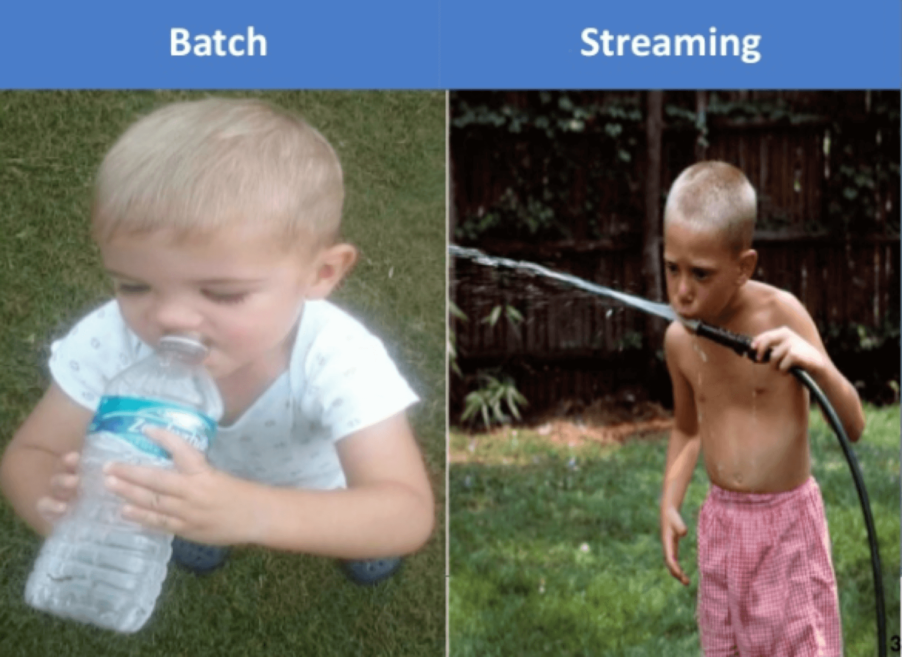
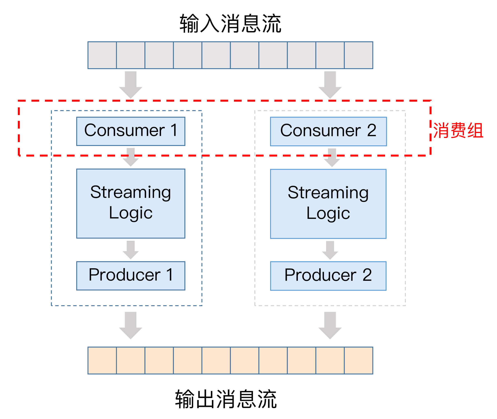
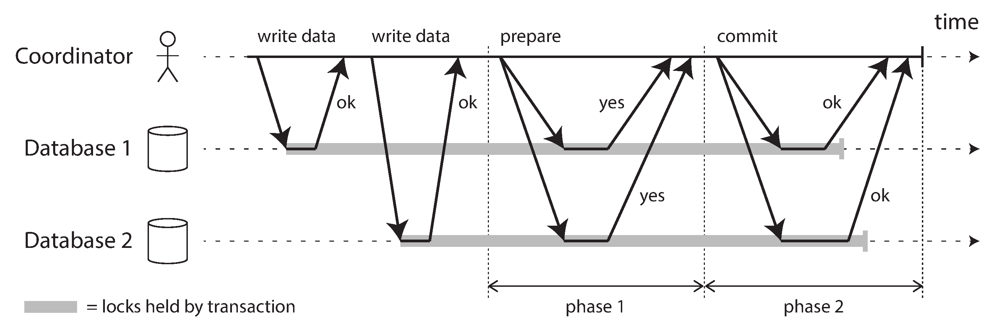
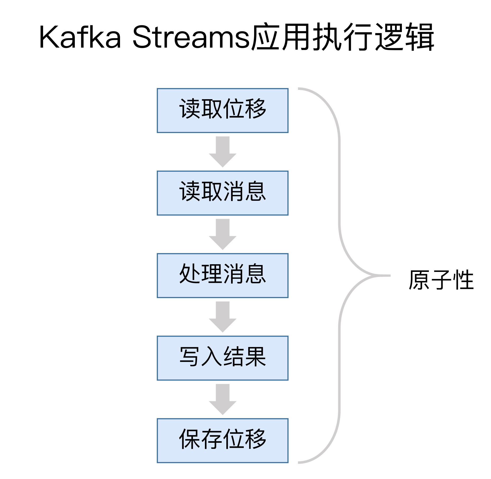
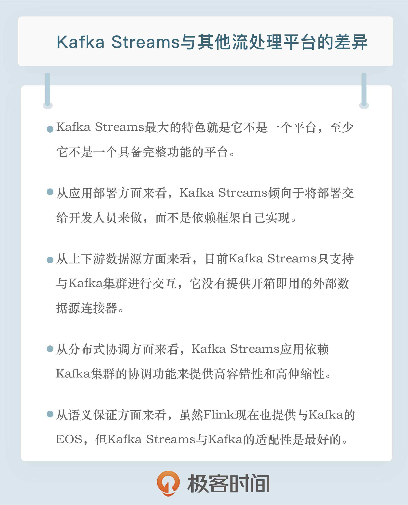

- 00 开篇词 为什么要学习Kafka？.md.html
- 01 消息引擎系统ABC.md.html
- 02 一篇文章带你快速搞定Kafka术语.md.html
- 03 Kafka只是消息引擎系统吗？.md.html
- 04 我应该选择哪种Kafka？.md.html
- 05 聊聊Kafka的版本号.md.html
- 06 Kafka线上集群部署方案怎么做？.md.html
- 07 最最最重要的集群参数配置（上）.md.html
- 08 最最最重要的集群参数配置（下）.md.html
- 09 生产者消息分区机制原理剖析.md.html
- 10 生产者压缩算法面面观.md.html
- 11 无消息丢失配置怎么实现？.md.html
- 12 客户端都有哪些不常见但是很高级的功能？.md.html
- 13 Java生产者是如何管理TCP连接的？.md.html
- 14 幂等生产者和事务生产者是一回事吗？.md.html
- 15 消费者组到底是什么？.md.html
- 16 揭开神秘的“位移主题”面纱.md.html
- 17 消费者组重平衡能避免吗？.md.html
- 18 Kafka中位移提交那些事儿.md.html
- 19 CommitFailedException异常怎么处理？.md.html
- 20 多线程开发消费者实例.md.html
- 21 Java 消费者是如何管理TCP连接的_.md.html
- 22 消费者组消费进度监控都怎么实现？.md.html
- 23 Kafka副本机制详解.md.html
- 24 请求是怎么被处理的？.md.html
- 25 消费者组重平衡全流程解析.md.html
- 26 你一定不能错过的Kafka控制器.md.html
- 27 关于高水位和Leader Epoch的讨论.md.html
- 28 主题管理知多少_.md.html
- 29 Kafka动态配置了解下？.md.html
- 30 怎么重设消费者组位移？.md.html
- 31 常见工具脚本大汇总.md.html
- 32 KafkaAdminClient：Kafka的运维利器.md.html
- 33 Kafka认证机制用哪家？.md.html
- 34 云环境下的授权该怎么做？.md.html
- 35 跨集群备份解决方案MirrorMaker.md.html
- 36 你应该怎么监控Kafka？.md.html
- 37 主流的Kafka监控框架.md.html
- 38 调优Kafka，你做到了吗？.md.html
- 39 从0搭建基于Kafka的企业级实时日志流处理平台.md.html
- 40 Kafka Streams与其他流处理平台的差异在哪里？.md.html
- 41 Kafka Streams DSL开发实例.md.html
- 42 Kafka Streams在金融领域的应用.md.html
- 加餐 搭建开发环境、阅读源码方法、经典学习资料大揭秘.md.html
- 用户故事 黄云：行百里者半九十.md.html
- 结束语 以梦为马，莫负韶华！.md.html
- 捐赠
40 Kafka Streams与其他流处理平台的差异在哪里？
你好，我是胡夕。今天我要和你分享的主题是：Kafka Streams与其他流处理平台的差异。
近些年来，开源流处理领域涌现出了很多优秀框架。光是在Apache基金会孵化的项目，关于流处理的大数据框架就有十几个之多，比如早期的Apache Samza、Apache Storm，以及这两年火爆的Spark以及Flink等。
应该说，每个框架都有自己独特的地方，也都有自己的缺陷。面对这众多的流处理框架，我们应该如何选择呢？今天，我就来梳理几个主流的流处理平台，并重点分析一下Kafka Streams与其他流处理平台的差异。
什么是流处理平台？
首先，我们有必要了解一下流处理平台的概念。“Streaming Systems”一书是这么定义“流处理平台”的：流处理平台（Streaming System）是处理无限数据集（Unbounded Dataset）的数据处理引擎，而流处理是与批处理（Batch Processing）相对应的。
所谓的无限数据，是指数据永远没有尽头。流处理平台是专门处理这种数据集的系统或框架。当然，这并不是说批处理系统不能处理这种无限数据集，只是通常情况下，它更擅长处理有限数据集（Bounded Dataset）。
那流处理和批处理究竟该如何区分呢？下面这张图应该能帮助你快速且直观地理解它们的区别。

好了，现在我来详细解释一下流处理和批处理的区别。
长期以来，流处理给人的印象通常是低延时，但是结果不准确。每来一条消息，它就能计算一次结果，但由于它处理的大多是无界数据，可能永远也不会结束，因此在流处理中，我们很难精确描述结果何时是精确的。理论上，流处理的计算结果会不断地逼近精确结果。
但是，它的竞争对手批处理则正好相反。批处理能提供准确的计算结果，但往往延时很高。
因此，业界的大神们扬长避短，将两者结合在一起使用。一方面，利用流处理快速地给出不那么精确的结果；另一方面，依托于批处理，最终实现数据一致性。这就是所谓的Lambda架构。
延时低是个很好的特性，但如果计算结果不准确，流处理是无法完全替代批处理的。所谓计算结果准确，在教科书或文献中有个专属的名字，叫正确性（Correctness）。可以这么说，目前难以实现正确性是流处理取代批处理的最大障碍，而实现正确性的基石是精确一次处理语义（Exactly Once Semantics，EOS）。
这里的精确一次是流处理平台能提供的一类一致性保障。常见的一致性保障有三类：
- 至多一次（At most once）语义：消息或事件对应用状态的影响最多只有一次。
- 至少一次（At least once）语义：消息或事件对应用状态的影响最少一次。
- 精确一次（Exactly once）语义：消息或事件对应用状态的影响有且只有一次。
注意，我这里说的都是对应用状态的影响。对于很多有副作用（Side Effect）的操作而言，实现精确一次语义几乎是不可能的。举个例子，假设流处理中的某个步骤是发送邮件操作，当邮件发送出去后，倘若后面出现问题要回滚整个流处理流程，已发送的邮件是没法追回的，这就是所谓的副作用。当你的流处理逻辑中存在包含副作用的操作算子时，该操作算子的执行是无法保证精确一次处理的。因此，我们通常只是保证这类操作对应用状态的影响精确一次罢了。后面我们会重点讨论Kafka Streams是如何实现EOS的。
我们今天讨论的流处理既包含真正的实时流处理，也包含微批化（Microbatch）的流处理。所谓的微批化，其实就是重复地执行批处理引擎来实现对无限数据集的处理。典型的微批化实现平台就是Spark Streaming。
Kafka Streams的特色
相比于其他流处理平台，Kafka Streams最大的特色就是它不是一个平台，至少它不是一个具备完整功能（Full-Fledged）的平台，比如其他框架中自带的调度器和资源管理器，就是Kafka Streams不提供的。
Kafka官网明确定义Kafka Streams是一个Java客户端库（Client Library）。你可以使用这个库来构建高伸缩性、高弹性、高容错性的分布式应用以及微服务。
使用Kafka Streams API构建的应用就是一个普通的Java应用程序。你可以选择任何熟悉的技术或框架对其进行编译、打包、部署和上线。
在我看来，这是Kafka Streams与Storm、Spark Streaming或Flink最大的区别。
Java客户端库的定位既可以说是特色，也可以说是一个缺陷。目前Kafka Streams在国内推广缓慢的一个重要原因也在于此。毕竟，很多公司希望它是一个功能完备的平台，既能提供流处理应用API，也能提供集群资源管理与调度方面的能力。所以，这个定位到底是特色还是缺陷，仁者见仁、智者见智吧。
Kafka Streams与其他框架的差异
接下来，我从应用部署、上下游数据源、协调方式和消息语义保障（Semantic Guarantees）4个方面，详细分析一下Kafka Streams与其他框架的差异。
应用部署
首先，我们从流处理应用部署方式上对Kafka Streams及其他框架进行区分。
我们刚刚提到过，Kafka Streams应用需要开发人员自行打包和部署，你甚至可以将Kafka Streams应用嵌入到其他Java应用中。因此，作为开发者的你，除了要开发代码之外，还要自行管理Kafka Streams应用的生命周期，要么将其打包成独立的jar包单独运行，要么将流处理逻辑嵌入到微服务中，开放给其他服务调用。
但不论是哪种部署方式，你需要自己处理，不要指望Kafka Streams帮你做这些事情。
相反地，其他流处理平台则提供了完整的部署方案。我以Apache Flink为例来解释一下。在Flink中，流处理应用会被建模成单个的流处理计算逻辑，并封装进Flink的作业中。类似地，Spark中也有作业的概念，而在Storm中则叫拓扑（Topology）。作业的生命周期由框架来管理，特别是在Flink中，Flink框架自行负责管理作业，包括作业的部署和更新等。这些都无需应用开发人员干预。
另外，Flink这类框架都存在资源管理器（Resource Manager）的角色。一个作业所需的资源完全由框架层的资源管理器来支持。常见的资源管理器，如YARN、Kubernetes、Mesos等，比较新的流处理框架（如Spark、Flink等）都是支持的。像Spark和Flink这样的框架，也支持Standalone集群的方式，即不借助于任何已有的资源管理器，完全由集群自己来管理资源。这些都是Kafka Streams无法提供的。
因此，从应用部署方面来看，Kafka Streams更倾向于将部署交给开发人员来做，而不是依赖于框架自己实现。
上下游数据源
谈完了部署方式的差异，我们来说说连接上下游数据源方面的差异。简单来说，Kafka Streams目前只支持从Kafka读数据以及向Kafka写数据。在没有Kafka Connect组件的支持下，Kafka Streams只能读取Kafka集群上的主题数据，在完成流处理逻辑后也只能将结果写回到Kafka主题上。
反观Spark Streaming和Flink这类框架，它们都集成了丰富的上下游数据源连接器（Connector），比如常见的连接器MySQL、ElasticSearch、HBase、HDFS、Kafka等。如果使用这些框架，你可以很方便地集成这些外部框架，无需二次开发。
当然，由于开发Connector通常需要同时掌握流处理框架和外部框架，因此在实际使用过程中，Connector的质量参差不齐，在具体使用的时候，你可以多查查对应的jira官网，看看有没有明显的“坑”，然后再决定是否使用。
在这个方面，我是有前车之鉴的。曾经，我使用过一个Connector，我发现它在读取Kafka消息向其他系统写入的时候似乎总是重复消费。费了很多周折之后，我才发现这是一个已知的Bug，而且早就被记录在jira官网上了。因此，我推荐你多逛下jira，也许能提前避开一些“坑”。
总之，目前Kafka Streams只支持与Kafka集群进行交互，它没有提供开箱即用的外部数据源连接器。
协调方式
在分布式协调方面，Kafka Streams应用依赖于Kafka集群提供的协调功能，来提供高容错性和高伸缩性。
Kafka Streams应用底层使用了消费者组机制来实现任意的流处理扩缩容。应用的每个实例或节点，本质上都是相同消费者组下的独立消费者，彼此互不影响。它们之间的协调工作，由Kafka集群Broker上对应的协调者组件来完成。当有实例增加或退出时，协调者自动感知并重新分配负载。
我画了一张图来展示每个Kafka Streams实例内部的构造，从这张图中，我们可以看出，每个实例都由一个消费者实例、特定的流处理逻辑，以及一个生产者实例组成，而这些实例中的消费者实例，共同构成了一个消费者组。

通过这个机制，Kafka Streams应用同时实现了高伸缩性和高容错性，而这一切都是自动提供的，不需要你手动实现。
而像Flink这样的框架，它的容错性和扩展性是通过专属的主节点（Master Node）全局来协调控制的。
Flink支持通过ZooKeeper实现主节点的高可用性，避免单点失效：某个节点出现故障会自动触发恢复操作。这种全局性协调模型对于流处理中的作业而言非常实用，但不太适配单独的流处理应用程序。原因就在于它不像Kafka Streams那样轻量级，应用程序必须要实现特定的API来开启检查点机制（checkpointing），同时还需要亲身参与到错误恢复的过程中。
应该这样说，在不同的场景下，Kafka Streams和Flink这种重量级的协调模型各有优劣。
消息语义保障
我们刚刚提到过EOS，目前很多流处理框架都宣称它们实现了EOS，也包括Kafka Streams本身。关于精确一次处理语义，有一些地方需要澄清一下。
实际上，当把Spark、Flink与Kafka结合使用时，如果不使用Kafka在0.11.0.0版本引入的幂等性Producer和事务型Producer，这些框架是无法实现端到端的EOS的。
因为这些框架与Kafka是相互独立的，彼此之间没有任何语义保障机制。但如果使用了事务机制，情况就不同了。这些外部系统利用Kafka的事务机制，保障了消息从Kafka读取到计算再到写入Kafka的全流程EOS。这就是所谓的端到端精确一次处理语义。
之前Spark和Flink宣称的EOS都是在各自的框架内实现的，无法实现端到端的EOS。只有使用了Kafka的事务机制，它们对应的Connector才有可能支持端到端精确一次处理语义。
Spark官网上明确指出了用户若要实现与Kafka的EOS，必须自己确保幂等输出和位移保存在同一个事务中。如果你不能自己实现这套机制，那么就要依赖于Kafka提供的事务机制来保证。
而Flink在Kafka 0.11之前也宣称提供EOS，不过是有前提条件的，即每条消息对Flink应用状态的影响有且只有一次。
举个例子，如果你使用Flink从Kafka读取消息，然后不加任何处理直接写入到MySQL，那么这个操作就是无状态的，此时Flink无法保证端到端的EOS。
换句话说，Flink最后写入到MySQL的Kafka消息可能有重复的。当然，Flink社区自1.4版本起正式实现了端到端的EOS，其基本设计思想正是基于Kafka 0.11幂等性Producer的两阶段提交机制。
两阶段提交（2-Phase Commit，2PC）机制是一种分布式事务机制，用于实现分布式系统上跨多个节点事务的原子性提交。下面这张图来自于神书“Designing Data-Intensive Applications”中关于2PC讲解的章节。它清晰地描述了一次成功2PC的过程。在这张图中，两个数据库参与到分布式事务的提交过程中，它们各自做了一些变更，现在需要使用2PC来保证两个数据库的变更被原子性地提交。如图所示，2PC被分为两个阶段：Prepare阶段和Commit阶段。只有完整地执行了这两个阶段，这个分布式事务才算是提交成功。

分布式系统中的2PC常见于数据库内部实现或以XA事务的方式供各种异质系统使用。Kafka也借鉴了2PC的思想，在Kafka内部实现了基于2PC的事务机制。
但是，对于Kafka Streams而言，情况就不同了。它天然支持端到端的EOS，因为它本来就是和Kafka紧密相连的。
下图展示了一个典型的Kafka Streams应用的执行逻辑。

通常情况下，一个Kafka Streams需要执行5个步骤：
- 读取最新处理的消息位移；
- 读取消息数据；
- 执行处理逻辑；
- 将处理结果写回到Kafka；
- 保存位置信息。
这五步的执行必须是原子性的，否则无法实现精确一次处理语义。
在设计上，Kafka Streams在底层大量使用Kafka事务机制和幂等性Producer来实现多分区的原子性写入，又因为它只能读写Kafka，因此Kafka Streams很容易地就实现了端到端的EOS。
总之，虽然Flink自1.4版本也提供与Kafka的EOS，但从适配性来考量的话，应该说Kafka Streams与Kafka的适配性是最好的。
小结
好了，我们来小结一下。今天，我重点分享了Kafka Streams与其他流处理框架或平台的差异。总的来说，Kafka Streams是一个轻量级的客户端库，而其他流处理平台都是功能完备的流处理解决方案。这是Kafka Streams的特色所在，但同时可能也是缺陷。不过，我认为很多情况下我们并不需要重量级的流处理解决方案，采用轻量级的库API帮助我们实现实时计算是很方便的情形，我想，这或许是Kafka Streams未来的破局之路吧。
在专栏后面的内容中，我会详细介绍如何使用Kafka Streams API实现实时计算，并跟你分享一个实际的案例，希望这些能激发你对Kafka Streams的兴趣，并为你以后的探索奠定基础。

开放讨论
知乎上有个关于Kafka Streams的“灵魂拷问”：为什么Kafka Streams没什么人用？我推荐你去看一下，并谈谈你对这个问题的理解和答案。
欢迎写下你的思考和答案，我们一起讨论。如果你觉得有所收获，也欢迎把文章分享给你的朋友。
© 2019 - 2023 Liangliang Lee. Powered by gin and hexo-theme-book.